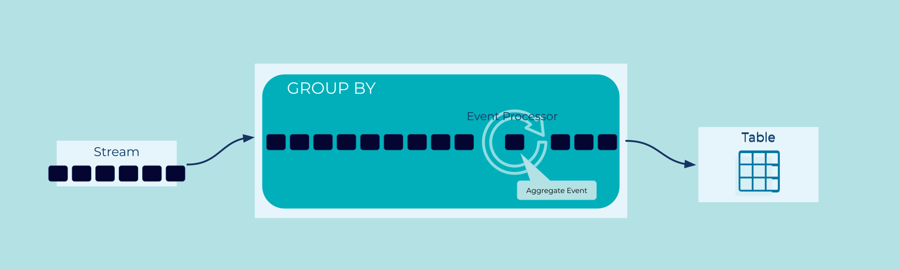

Wait For N Events
Sometimes Events become significant after they've happened several times.
A user can try to log in five times, but after that we'll lock their account. A parcel delivery will be attempted three times before we ask the customer to collect it from the depot. A gamer gets a trophy after they've killed their hundredth Blarg.
How can we efficiently watch for logically similar Events?
Problem
How can an application wait for a certain number of Events to occur before performing processing?
Solution

To consider related Events as a group, we need to group them by a given key, and then count the occurrences of that key.
Implementation
In the streaming database ksqlDB, we can easily create a Projection Table that groups and counts Events by a particular key.
As an example, imagine that we are handling very large financial transactions. We only want to process these transactions after they've been reviewed and approved by two managers.
We'll start with a stream of signed Events from managers:
CREATE OR REPLACE STREAM trade_reviews (
trade_id BIGINT,
manager_id VARCHAR,
signature VARCHAR,
approved BOOLEAN
) WITH (
KAFKA_TOPIC = 'trade_reviews_topic',
VALUE_FORMAT = 'AVRO',
PARTITIONS = 2
);
We'll group reviews by their trade_id, and then COUNT() how many
approvals (approved = TRUE) we see for each:
CREATE OR REPLACE TABLE trade_approval AS
SELECT trade_id, COUNT(*) AS approvals
FROM trade_reviews
WHERE approved = TRUE
GROUP BY trade_id;
Query that stream in one terminal:
SELECT *
FROM trade_approval
WHERE approvals = 2
EMIT CHANGES;
Insert some data in another terminal:
INSERT INTO trade_reviews ( trade_id, manager_id, signature, approved )
VALUES (1, 'alice', '6f797a', TRUE);
INSERT INTO trade_reviews ( trade_id, manager_id, signature, approved )
VALUES (2, 'alice', 'b523af', TRUE);
INSERT INTO trade_reviews ( trade_id, manager_id, signature, approved )
VALUES (3, 'alice', 'fe1aaf', FALSE);
INSERT INTO trade_reviews ( trade_id, manager_id, signature, approved )
VALUES (4, 'alice', 'f41bf3', TRUE);
INSERT INTO trade_reviews ( trade_id, manager_id, signature, approved )
VALUES (2, 'bob', '0441ed', TRUE);
INSERT INTO trade_reviews ( trade_id, manager_id, signature, approved )
VALUES (4, 'bob', '50f237', TRUE);
INSERT INTO trade_reviews ( trade_id, manager_id, signature, approved )
VALUES (1, 'carol', 'ee52f5', FALSE);
INSERT INTO trade_reviews ( trade_id, manager_id, signature, approved )
VALUES (3, 'carol', '4adb7c', TRUE);
This produces a stream of trades that are ready to process:
+----------+-----------+
|TRADE_ID |APPROVALS |
+----------+-----------+
|2 |2 |
|4 |2 |
Considerations
Note that in the example above, we queried for an exact number of
approvals (WHERE approvals = 2). We could have used a
greater-than-or-equal check (WHERE approvals >= 2), but that would
have emitted a new Event for a third approval, and then a fourth, and so on.
In this case, that would be the wrong behavior, but it might be a useful feature
in a system where we wanted to reward loyal customers and send out a
discount email for every order after their first 10.
References
- See also the Event Grouping pattern, for a more general discussion of
GROUP BYoperations. - See chapter 15, "Building Streaming Services", of Designing Event Driven Systems for further discussion.